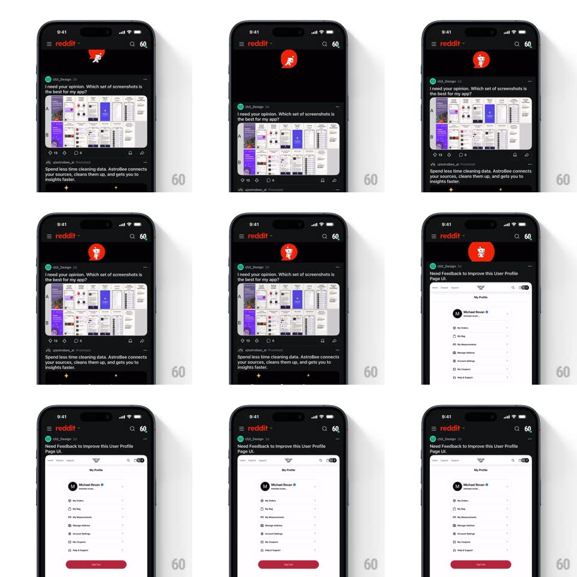

Media
Frame-by-frame

Rebuild this interaction 1:1: Reddit's pull-to-refresh - dragging the feed down reveals Snoo running in place inside an expanding red circle, and releasing fires a red progress bar across the top as the feed swaps to fresh posts.

Rebuild this interaction 1:1: Reddit's pull-to-refresh - dragging the feed down reveals Snoo running in place inside an expanding red circle, and releasing fires a red progress bar across the top as the feed swaps to fresh posts. ## Integration Integration: stack-agnostic spec - springs given as stiffness/damping, timed motions as duration + curve; map every value to your framework and animation library of choice. ## Scene Dark Reddit feed (header, post cards with images); the refresh zone above the feed hides a red circle containing the running Snoo mascot. ## Motion spec Pattern: gesture-driven mascot reveal with refresh bar. - Pull: the feed translates down 1:1 (with rubber-banding past 120pt); the red circle scales up from a point (0 -> 1 across the pull range) and Snoo fades in inside it (opacity tied to pull depth). - Run: Snoo's run cycle plays at a speed proportional to pull depth (0.5x at first reveal -> 2x at threshold). - Release past threshold: the circle contracts back (spring ~380/22, 300ms) as a thin red progress bar sweeps left-to-right across the top of the feed (900ms, ease-in-out). - Swap: the feed content crossfades to the new posts (200ms) when the bar completes and snaps back up (spring ~340/24, 350ms). - Release below threshold: everything springs home without the bar. ## Calibration - Mascot scale and run speed are continuous functions of drag distance until release. - The bar owns the top edge - it overlaps the header, not the status bar. ## Reduced motion Standard circular spinner instead of the running mascot. ## Don't miss - Snoo runs in place - the mascot never translates horizontally. - The content swap happens exactly at bar completion.